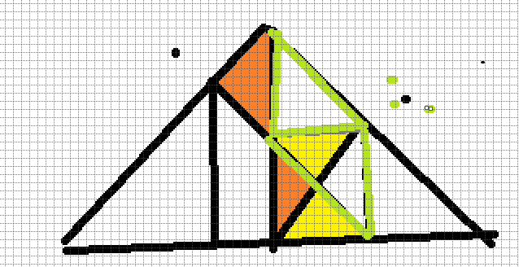
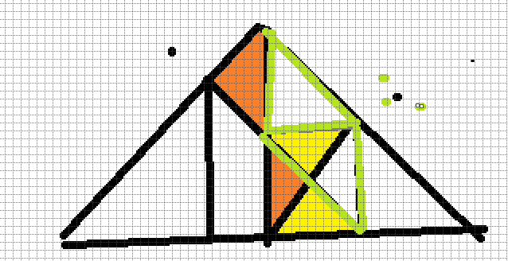
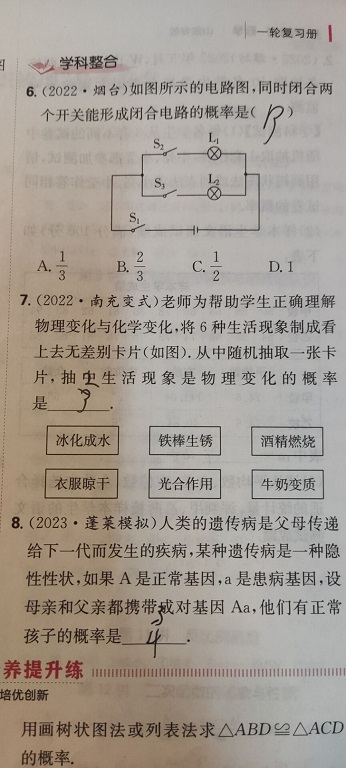
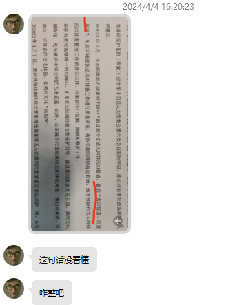
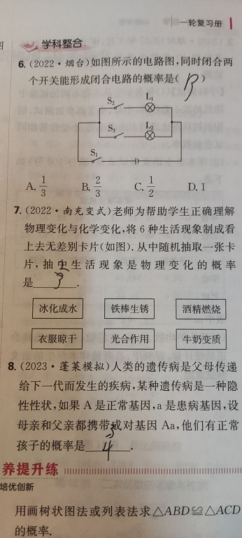
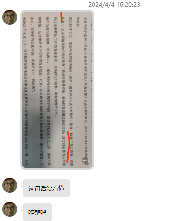
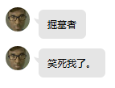
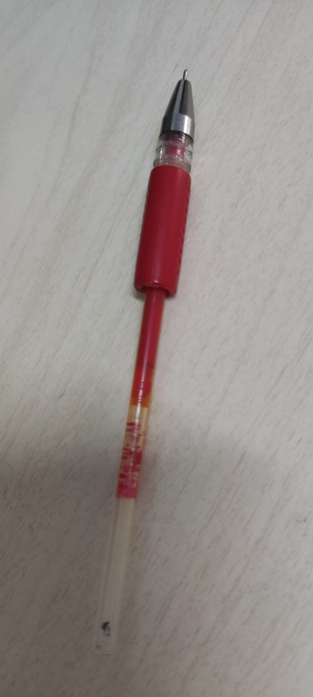
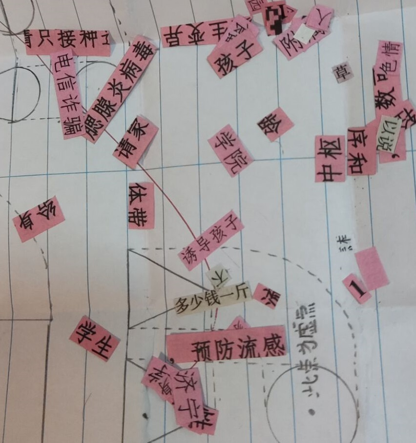

王哥梗百科
● 关于“一屙三坨屎”
原为“一线三等角”,又名“一线三直角”,如图所示 
● 关于“屙了”
王哥的原创词汇，主要用于表达吃惊或者尴尬的情绪
衍生词汇
1.拽了 读作"zhuai1 le0"，与“屙了”同义
2.踹了 读作"chuai4 le0"，与“屙了”同义
3.毁了 用于表达在一些特殊情况下崩溃的心情，比如抽卡抽错卡池
4.撅了 来源于一个b站的梗，野兽先辈
5.umb拽了 原为umbrella，发音相似
衍生短语
1.撅屙拽踹 又名"拽踹屙撅"，无实际意义
2.踹！踹！你真拽！ 一种夸赞用语
3.工欲善其事 详见工欲善其事
● 关于泡面
那天晚上放学后，和王哥在学校天台上吃方便面


那天晚上我们一共享用了两道菜
方便面和美丽的夜色
● 关于“这是什么鸟”
王哥炫耀自己抽卡抽知更鸟十连双金

● 关于磁盘剩余容量
帮王哥安装Java运行环境，王哥很在意此时的磁盘剩余容量
● 关于“SB才站着”
待补充
● 关于“打金服”
因为王哥，这个梗在班里火了起来
无损原版:BV1jt42157MS
关于BGM
《曾经的你》 因为这个梗就火了
衍生词汇
1.骷髅卖银服
2.骷髅炼铜服 Fe+CuSO\(_{4}\)==Cu+FeSO\(_{4}\)
● 关于凸透镜成像(u<f)
王哥说凸透镜成像物距小于一倍焦距时很恐怖，因为像成在物体后方，像鬼一样追着物体跑
在线体验:凸透镜成像
● 关于“冰葡萄”
王哥购买“顶喜冰葡萄”雪糕，封面上印的是葡萄味，结果拆开一看居然是奶味，这一批货好像都是这样

● 王哥的五年级数学作业

● 关于外卖夹饼
王哥点了外卖夹饼，结果给送过来的是肯德基，王哥吃完后才发现是外卖送错了，这是邻居点的
● 关于“工欲善其事”
王哥的二创名言，原为“工欲善其事，必先利其器”
衍生用法
1.工欲善其事，必先屙其屎 比原句押韵！
2.工欲善其事，必先擦其腚
● 关于“Amazing”
● 关于“荧妹娇喘”
王哥发在群里的音频文件，不知道有多少人上了当
● 关于狗哥
王哥的一位同学，以下词汇均由王哥发明
转到条目：狗哥
衍生词汇
1.DogBrother 狗哥的英文名称
2.狗哥分子 王哥认为狗哥由分子组成，简称狗哥分子(Dog\(_{2}\))
3.狗块 狗哥的衍生词汇，固态的狗哥
4.狗气 狗哥的衍生词汇，气态的狗哥
5.狗酸氢氨 NH\(_{4}\)HDogO\(_{3}\)
衍生用法
H\(_{2}\)DogO\(_{4}\)+BaCl\(_{2}\)==BaDogO\(_{4}\)↓+2HCl 工业制取狗酸钡
Dog\(_{2}\)==\(playGenshin\)==2OP+2G 分解狗气
● 关于“所厕”
● 王哥做实验
王哥中考实验制取二氧化碳，不小心把火柴丢到装有石灰石的试管里了
● 王哥的解题思路
 

● 王哥对于一些题目的评价
  
  
● 王哥对于原神"掘墓者"的评价
王哥问：为什么要撅墓 
● 王哥的物理安全用电PPT
点击下载
给王哥画的宣传画，但是演讲那天王哥生病了，所以很遗憾没用上 
● 关于“rulazi”
王哥引入班级的济宁话，“汝拉子”有笨蛋的意思
● 关于“臭鸡蛋派对”
原为"蛋仔派对",俗称“臭鸡蛋派对”，SZM爱玩的游戏
● 关于“高桌一等”
● 关于“握笔器”
初一送给王哥的笔，王哥一直保存到了初四毕业 
● 关于“更新包”
和王哥把学校发的宣传单上的字裁剪下来，然后组合成新的句子......  
● 关于“FWB开车”
FWB开电动三轮车差点撞沟里，幸亏王哥没做FWB的车
● 关于“华强买钠”
● 关于“homo头盔”
王哥在电商平台发现的商品，这个戴着头盔面罩的模特看着很眼熟... 
● 王哥的生日
待补充
● 关于"114日元等于多少人民币"
王哥的新发现 
● 关于“章鱼哥”
原神遗迹守卫的一句语音的空耳，最先由王哥发现
不得不说这句真的很想“章鱼哥”
● 关于王哥的头像
王哥的头像，一直以来都是科比，只不过是AI重绘的，以下是几个落选版本

● 关于王哥的考试涂卡笔
王哥和我买到了同款